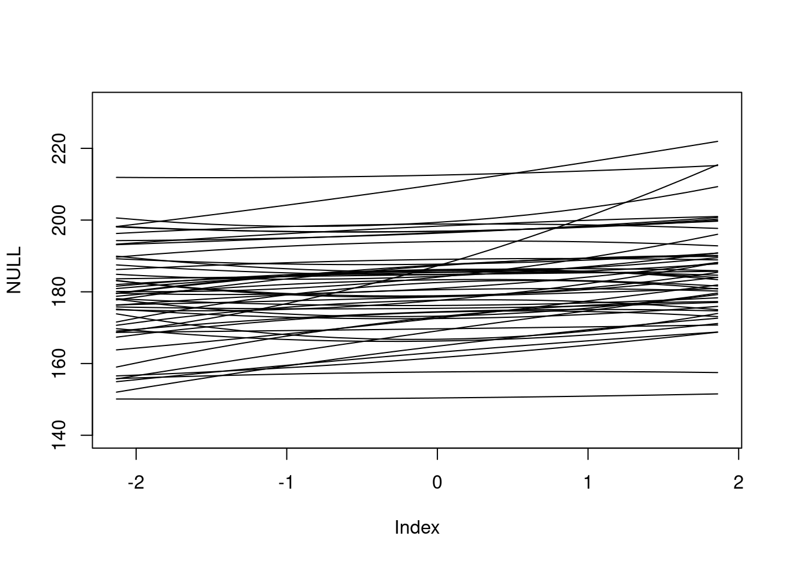

3 Homework: Week 2
2021-08-24 [updated: 2021-09-08]
3.1 Question 1
The weights listed below were recorded in the !Kung census, but heights were not recorded for these individuals. Provide predicted heights and 89% compatibility intervals for each of these individuals. That is, fill in the table below, using model-based predictions.
Individual, weight, expected height, 89% interval
1, 45,,,
2, 40,,,
3, 65,,,
4, 31,,,
5, 53,,,Model:
\(h_{i} \sim \text{Normal}(\mu_{i}, \sigma)\)
\(\mu_{i} = \alpha + \beta(x_{i} - \bar{x})\)
\(\alpha \sim \text{Normal}(178, 20)\)
\(\beta \sim \text{Log-Normal}(0, 1)\)
\(\sigma \sim \text{Uniform}(0, 50)\)
library(rethinking)
library(data.table)
library(ggplot2)
library(tidybayes)
theme_set(theme_bw())
data(Howell1)
d <- Howell1[Howell1$age >= 18,]
m <- quap(
alist(
height ~ dnorm(mu, sigma),
mu <- a + b * (weight - mean(d$weight)),
a ~ dnorm(178, 20),
b ~ dnorm(0, 1),
sigma ~ dunif(0, 50)
),
data = d
)
precis(m)## mean sd 5.5% 94.5%
## a 154.6 0.270 154.17 155.03
## b 0.9 0.042 0.84 0.97
## sigma 5.1 0.191 4.77 5.38Simulate:
# Set weights to simulate for
weights <- data.table(weight = c(45, 40, 65, 31, 54),
id = as.character(seq(1, 5)))
simmed <- sim(m, list(weight = weights$weight), n = 1e3)
# Tidy
DT <- melt(as.data.table(simmed), measure.vars = paste0('V', 1:5),
value.name = 'height', variable.name = 'id')
DT[, id := gsub('V', '', id)]
DT[weights, weight := weight, on = 'id']
# Plot
ggplot(DT, aes(height)) +
stat_halfeye(.width = .89) +
facet_wrap(~id)
3.2 Question 2
Model the relationship between height (cm) and the natural logarithm of weight (log-kg): log(weight). Use the entire Howell1 data frame, all 544 rows, adults and non-adults. Use any model type from Chapter 4 that you think useful: an ordinary linear regression, a polynomial or a spline. Plot the posterior predictions against the raw data
library(rethinking)
library(data.table)
library(ggplot2)
library(tidybayes)
theme_set(theme_bw())
data(Howell1)
d <- Howell1
d$logweight <- log(d$weight)
m1 <- quap(
alist(
height ~ dnorm(mu, sigma),
mu <- a + b * (logweight - mean(d$logweight)),
a ~ dnorm(178, 20),
b ~ dnorm(0, 1),
sigma ~ dunif(0, 50)
),
data = d
)
sim_x <- log(1:60)
simmed <- sim(m1, list(logweight = sim_x))
# Tidy
DT <- melt(as.data.table(simmed), value.name = 'height', variable.name = 'x')## Warning in melt.data.table(as.data.table(simmed), value.name = "height", : id.vars and
## measure.vars are internally guessed when both are 'NULL'. All non-numeric/integer/logical type
## columns are considered id.vars, which in this case are columns []. Consider providing at least
## one of 'id' or 'measure' vars in future.DT[data.table(sim_x, x = paste0('V', 1:60)),
logweight := sim_x,
on = 'x']
DT[, meanheight := mean(height), by = logweight]
DT[, low := PI(height)[1], by = logweight]
DT[, high := PI(height)[2], by = logweight]
# Plot
ggplot(DT) +
geom_ribbon(aes(x = exp(logweight), ymin = low, ymax = high), fill = 'grey') +
geom_point(aes(exp(logweight), height), data = d, color = 'lightblue', alpha = 0.8) +
geom_line(aes(exp(logweight), meanheight))Using the dlnorm, prior of a Log normal distribution on beta
m2 <- quap(
alist(
height ~ dnorm(mu, sigma),
mu <- a + b * (logweight - mean(d$logweight)),
a ~ dnorm(178, 20),
b ~ dlnorm(0, 1),
sigma ~ dunif(0, 50)
),
data = d
)
sim_x <- log(1:60)
simmed <- sim(m2, list(logweight = sim_x))
# Tidy
DT <- melt(as.data.table(simmed), value.name = 'height', variable.name = 'x')## Warning in melt.data.table(as.data.table(simmed), value.name = "height", : id.vars and
## measure.vars are internally guessed when both are 'NULL'. All non-numeric/integer/logical type
## columns are considered id.vars, which in this case are columns []. Consider providing at least
## one of 'id' or 'measure' vars in future.DT[data.table(sim_x, x = paste0('V', 1:60)),
logweight := sim_x,
on = 'x']
DT[, meanheight := mean(height), by = logweight]
DT[, low := PI(height)[1], by = logweight]
DT[, high := PI(height)[2], by = logweight]
# Plot
ggplot(DT) +
geom_ribbon(aes(x = exp(logweight), ymin = low, ymax = high), fill = 'grey') +
geom_point(aes(exp(logweight), height), data = d, color = 'lightblue', alpha = 0.8) +
geom_line(aes(exp(logweight), meanheight))3.3 Homework: Question 3
Set up:
library(rethinking)
library(data.table)
library(ggplot2)
library(tidybayes)
theme_set(theme_bw())
data(Howell1)
d <- Howell1
d$weight_s <- scale(d$weight)
d$weight_s2 <- scale(d$weight) ^ 2
m <- quap(
alist(
height ~ dnorm(mu, sigma),
mu ~ a + b1 * weight_s + b2 * weight_s2,
a ~ dnorm(178, 20),
b1 ~ dlnorm(0, 1),
b2 ~ dnorm(0, 1),
sigma ~ dunif(0, 50)
),
data = d
)
n <- 20
sim_x <- seq(min(d$weight_s), max(d$weight_s), length.out = n)
linked <- link(
m,
data = list(weight_s = sim_x, weight_s2 = sim_x ^ 2),
post = extract.prior(m)
)[1:50,]
plot(NULL, xlim = range(sim_x), ylim = range(linked) + c(-10, 10))
apply(linked, 1, FUN = function(x) lines(sim_x, x))
## NULLm <- quap(
alist(
height ~ dnorm(mu, sigma),
mu ~ a + b1 * weight_s + b2 * weight_s2,
a ~ dnorm(178, 20),
b1 ~ dlnorm(0, 1),
b2 ~ dnorm(0, 10),
sigma ~ dunif(0, 50)
),
data = d
)
n <- 20
sim_x <- seq(min(d$weight_s), max(d$weight_s), length.out = n)
linked <- link(
m,
data = list(weight_s = sim_x, weight_s2 = sim_x ^ 2),
post = extract.prior(m)
)[1:50,]
plot(NULL, xlim = range(sim_x), ylim = range(linked) + c(-10, 10))
apply(linked, 1, FUN = function(x) lines(sim_x, x))
## NULL